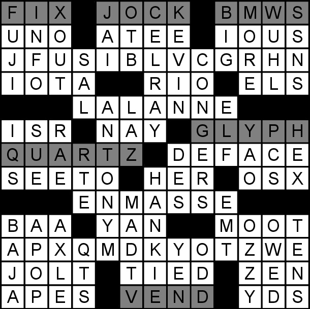

A crossword is presented which contains a two-row cryptogram. In addition, six of the clues don’t seem to match their answers. The mismatched clue/answer combos are:
FIX/OAF JOCK/WART BMWS/FRED GLYPH/STEEL QUARTZ/ORBACH VEND/ERTE
These pairs give the decryption key. For instance, the first letter of the cryptogram (J) is actually a W because the J of JOCK corresponds to the W of WART. In this way, the cryptogram (which is also a pangram) can be decrypted to spell WORDAFTERSALT and BEFORETEACHER which clues the final answer, SUBSTITUTE.
